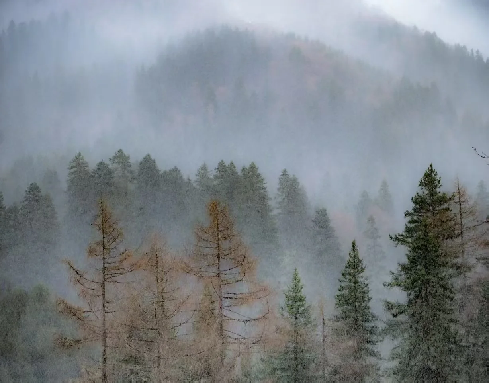

TO YOUR TWENTIES
写在二十岁
看到这里，你可能会觉得这个网站还有一点粗糙。没关系，你可以继续拍下新的照片，也继续完善这里。
我想，这个网站或许可以算作一个起点。就像你的人生来到二十岁，也抵达了一个新的节点。前面还有无数风景在等着你。
所以，请继续按下快门，记录属于你人生黄金时代的每一个瞬间吧。

ABOUT THIS EXHIBITION
四十八张照片，五段观看世界的方式。它们来自山野、城市、人物、校园和夜空，也来自一次次愿意停下来的瞬间。
这不是一份完成的答案，只是二十岁以前，被认真保存下来的一部分时间。
TO YOUR TWENTIES
看到这里，你可能会觉得这个网站还有一点粗糙。没关系，你可以继续拍下新的照片，也继续完善这里。
我想，这个网站或许可以算作一个起点。就像你的人生来到二十岁，也抵达了一个新的节点。前面还有无数风景在等着你。
所以，请继续按下快门，记录属于你人生黄金时代的每一个瞬间吧。